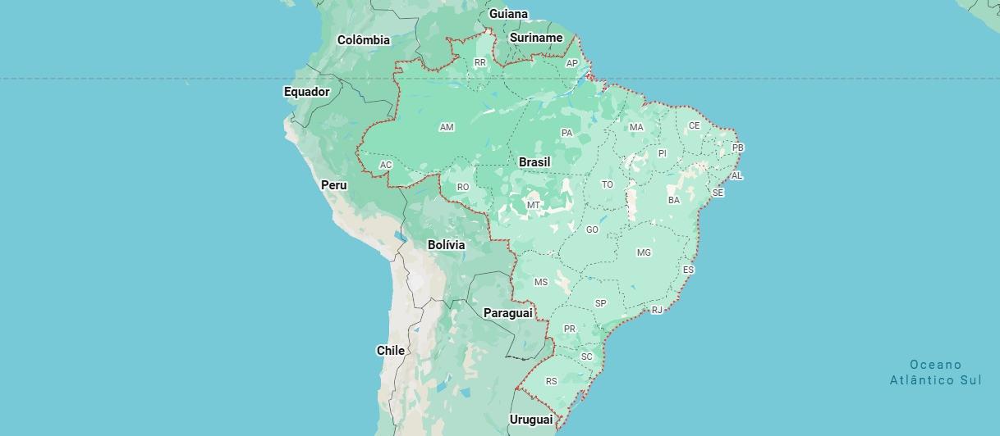

Início
Monitoramento
Recomendações
Fale Conosco
Clique no mapa
Para descobrir o local ideal para seu plantio

Selecione um estado
Fertilidade
Alta
pH do Solo
6.2
Nitrogênio
86%
Água Disponível
78%
Histórico de precipitação
Período
qualquer
Último ano
Últimos 6 meses
Últimos 30 dias